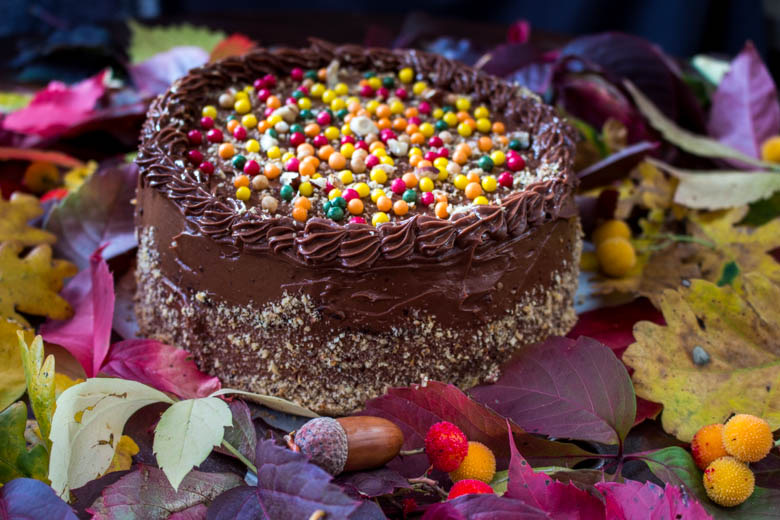
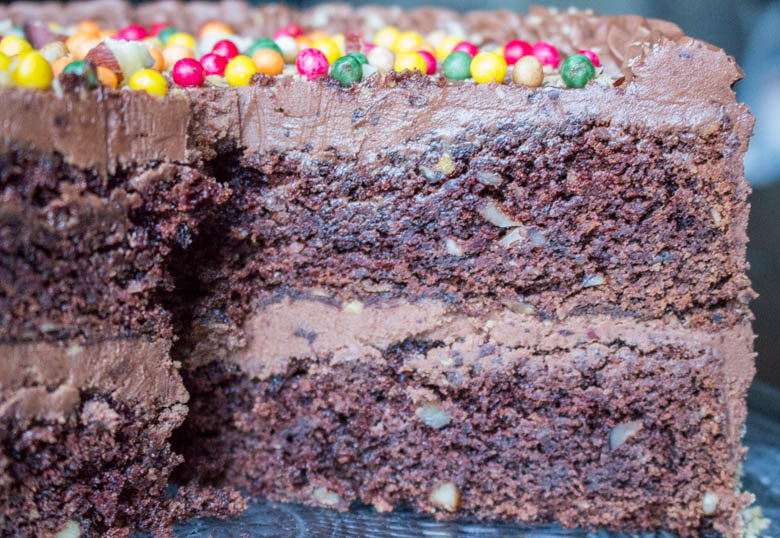
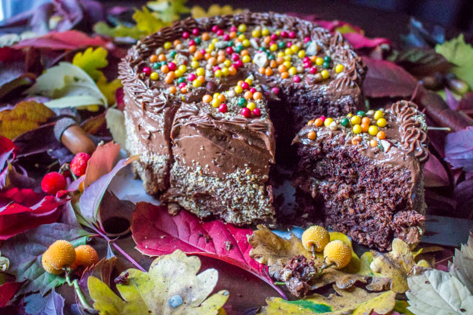
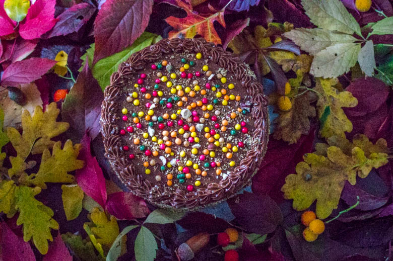

Layer Cake chocolat noisettes pour un goûter d’automne

Hello guys 😉 ! Rendez vous ici avec un goûter aux saveurs automnales made in USA!!!
Aujourd’hui je vous présente la recette que j’ai créé pour la 2ème édition de la foodista challenge!
La foodista c’est quoi d’abord?
Il s’agit tout simplement d’un défi culinaire entre blogueurs et non blogueurs autour d’un thème décidé par la marraine désignée à chaque édition crée par… moi même! J’ai donc fixé les règles du jeu et chaque marraine (ou parrain) doit en plus de choisir un thème choisir deux règles parmi les suivantes (histoire de pimenter un peu le tout!):
– Un ingrédient imposé pour les recettes sucrées et un autre ingrédient pour les recettes salées (un ingrédient commun si cela est possible) ; – Une couleur qui devra être présente dans la recette ou dans la décoration ; – Un pays qui inspirera les recettes du thème ; – Un accessoire qui devra se trouver sur les photos
Pour la première édition le thème était CUPCAKES & MUFFINS avec l’ingrédient principal commençant par la lettre « p » et un ruban comme élément de décoration. Suite à toutes les jolies présentations que ce thème a engendré j’ai nommé Lucie du blog Goulucieusement pour la deuxième édition!!
Elle a choisi comme thème :
Je ne sais pas vous, mais moi l’automne me rend mélancolique et même si j’aime la couleur des arbres à cette époque et que je pourrais rester planter là au milieu de la pluie en m’enivrant de ces senteurs, je n’ai qu’une envie c’est de rentrer chez moi, d’être sous mon plaid et de dévorer des plats qui de part leurs saveurs sauront me réconforter.
J’ai alors choisi de vous préparer un layer cake chocolat noisettes pour le goûter car c’est tout à fait ce que j’aimerai pourvoir manger chaque après-midi en rentrant après le travail. Pour le glaçage je me suis totalement inspirée du fabuleux blog de Sweetapolita que j’adore!!
De plus, je profite de cette recette pour vous présenter ma deuxième vidéo :
J’espère que cette recette vous plaira et qu’elle vous donnera envie de vous faire à votre tour un délicieux goûter!
C’est partie pour la recette!
Ingrédients
- Chocolat noir - 130g
- Eau - 60ml
- Farine - 180g
- Levure chimique - 1 càc
- Cacao en poudre non sucré - 2 càs
- Sel - 1 pincée
- Bicarbonate de sodium - 1 càc
- Beurre pommade - 125g
- Sucre semoule - 200g
- Vergeoise blonde - 70g
- Oeufs à temp ambiante - 2
- Lait - 90ml
- Noisettes en poudre - 65 gr
- Noisette entieres - 2 poignées
- Beurre pommade - 225g
- Sucre glace - 190g
- Extrait de vanille - 2càc
- Chocolat noir à 70% - 125g
- Nutella - 120g
- Lait - 1càs
- Noisettes en poudre
- Boules de couleurs
- Des feuilles, glands, noisettes
Instructions
- Au bain marie, faire fondre le chocolat avec l'eau
- Dans un bol mélanger les ingrédients secs : farine, levure, bicarbonate, sel, cacao, noisettes Préalablement : mixer les noisettes entières très grossièrement pour avoir des morceaux dans le gâteau
- Dans le bol de votre robot (sinon à l'aide d'un batteur) mélanger le beurre le sucre et la vergeoise jusqu’à ce que le mélange blanchisse
- Ajouter les œufs un à un tout en continuant de battre
- Incorporer petit à petit le mélange contenant les ingrédients secs et mélanger afin d'obtenir un mélange homogène
- Verser le lait puis le chocolat fondu et mélanger
- Préchauffer le four à 180°
- Peser votre pâte
- Verser la moitié du mélange dans chaque moule Je mets du papier sulfurisé au fond de mes moules et je beurre bien les contours car il ne faut pas que le gâteau accroche pour avoir une belle forme ronde à la fin
- Enfourner à 180° pendant 35min (selon les fours la cuisson peut varier légèrement de quelques minutes alors n'oubliez pas de surveiller la cuisson)
- Faire fondre le chocolat avec le lait au bain marie
- Dans le bol de votre robot (sinon dans un grand saladier avec un batteur électrique ou non), battre le beurre et le sucre glace pendant 2 bonnes minutes
- Ajouter l'extrait de vanille et battre à nouveau
- Verser le chocolat fondu et mélanger
- Incorporer le nutella et mélanger de manière à obtenir un mélange bien homogène
- Placer au frais le temps que le glaçage reprenne une consistance un peu plus épaisse
- Couvrir la première génoise de glaçage
- Saupoudrer de noisettes en poudre
- Poser la deuxième génoise dessus
- Réaliser votre "crumb-coat" : afin d’éviter les miettes dans le glaçage final, déposer une fine couche de glaçage sur le dessus de la génoise du haut et l'étaler sur le layer cake à l’aide d’une spatule pour le recouvrir entièrement. Cette couche doit être la plus fine possible
- Mettre le gâteau au réfrigérateur minimum 30min afin que le glaçage durcisse
- Recouvrir généreusement de glaçage et lisser le glaçage sur le dessus et sur les côtés du gâteau à l'aide d'une spatule
- Décorer avec des noisettes en poudre
- A l'aide d'une douille et d'une poche à douille réaliser des petites décorations sur le haut de gâteau
- Faites marcher votre imagination faites comme bon vous semble!! 🙂
- Conserver au frigo avant la dégustation




Les tips de la communauté
Très grand succès avec 73 commentaires enthousiastes. Le Layer Cake chocolat-noisettes génère beaucoup d'intérêt et d'admiration pour sa présentation élégante.
Astuces
- Bien étaler les couches pour un gâteau bien présenté à la coupe
- Utiliser des noisettes de qualité pour intensifier le goût
Variantes suggérées
- Remplacer les noisettes par d'autres fruits secs comme des amandes ou des noix
- Ajouter différentes saveurs de ganache selon les goûts
Ajustements signalés
- vraiment que j’essaye pour la 3ème fois.